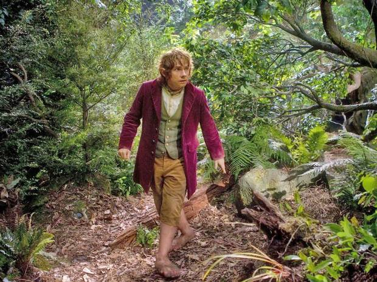

name: looper layout: true class: looper --- name: image layout: true class: center, middle, image --- name: image-white layout: true class: center, middle, image, image-white --- name: image-last layout: true class: center, middle, image, image-last --- name: ambiata layout: true class: ambiata --- name: ambiata-full layout: true class: center, middle, ambiata-full --- name: code-small layout: true class: code-small --- name: question layout: true class: center, middle, question --- name: rule layout: true class: center, middle, rule --- name: inverse layout: true class: center, middle, inverse --- name: starwars layout: true class: center, middle, starwars --- class: center, middle template: image <img src="images/love-the-bomb.jpg" height="100%" /> # How I learned to stop unit testing and love property-based testing --- template: ambiata-full # Charles O'Farrell # Ambiata --- template: starwars # A long time ago in a unit test # far, far away --- layout: false ## Once upon a time ```scala val json = """ { "name": "bob", "postcode": 7000 } """ val user = User("bob", 7000) parseJson(json) == user ``` --- ## Tedious ```scala parseJson(read("example1.json")) == user1 parseJson(read("example2.json")) == user2 parseJson(read("example2.json")) == user2 ``` --- template: image <img src="images/manual-labour.jpg" /> # Manual labour --- template: question ## There's gotta be a better way? --- template: image-white <img src="images/property-inverse.png" style="margin-top: 150px" /> --- ## Inverse ```scala def inverse(user: User): Boolean = parseJson(toJson(user)) == user inverse(User("alice", 1000)) inverse(User("bob", 2000)) inverse(User("charles", 3000)) ``` --- template: image  # There and back again? --- template: question ## What if we could generate a User? --- ## Magic? ```scala forAll { user: User => parseJson(toJson(user)) == user } ``` --- ## ScalaCheck! ```scala import org.scalacheck._ import org.scalacheck.Gen._ object UserJsonTest extends Properties("UserJson") { property("User json") = forAll { user: User => parseJson(toJson(user)) =? user } } ``` --- template: ambiata ## [Argonaut Codec Laws](https://github.com/ambiata/ivory/blob/master/ivory-core/src/test/scala/com/ambiata/ivory/core/ArgonautProperties.scala) ```scala property("User json") = codecJsonLaw[User] ``` --- template: image <img src="images/there-and-back-again3.jpg" /> # There and back again! --- ## Hello World ```scala forAll { s: String => s.reverse.reverse =? s } ``` --- ## Files ```scala forAll { a: String => read(write(a)) =? a } ``` --- ## DB ```scala forAll { a: User => get(create(a)) =? a } ``` --- template: image <img src="images/golden-ticket.jpg" /> ## Symmetry is your golden ticket --- template: inverse # Generators 101 --- ## Step 1 - Data ```scala case class User(name: String, postcode: Int) ``` --- ## Step 2 - Just add Gen ```scala object GenUser { def user: Gen[User] = for { name <- Gen.string postcode <- Gen.int } yield User(name, postcode) } ``` --- ## Step 3 - Arbitrary ```scala object Arbitraries { implicit def UserArbitrary: Arbitrary[User] = Arbitrary(GenUser.user) } ``` --- ## Step 4 - Profit ```scala import Arbitraries._ forAll { user: User => ... } ``` --- template: inverse # Training wheels --- ## Test this ```scala trait List[A] { def headOption: Option[A] } ``` --- ## Bleh ```scala Nil.headOption = None List(1).headOption = Some(1) List(1, 2).headOption = Some(1) List(1, 2, 3).toList.headOption = Some(1) ... ``` --- ## Rookie mistake ```scala forAll { l: List[Int] => l.headOption =? (if (l.isEmpty) None else Some(l.head)) } ``` --- template: image-white --- ## Take 2 - Ignore inputs ```scala forAll { l: List[Int] => !l.isEmpty ==> { l.headOption =? Some(l.head) }} ``` --- ## Beware... ```scala forAll { l: List[Int] => l.isEmpty ==> { ... }} ``` --- template: rule ### Gave up after only 5 passed tests. ### 96 tests were discarded. --- template: image <img src="images/onion.jpg" style="width: 140%; left: -100px" /> ## Data is like an onion --- ## Layers ```scala forAll { (h: Int, t: List[Int]) => (h :: t).headOption =? Some(h) } forAll { Nil.headOption =? None } ``` --- ## NonEmptyList ```scala import scalaz._ case class NonEmptyList[A](head: A, tail: List[A]) { def list: List[A] = a :: tail } import scalaz.scalacheck.ScalazArbitrary._ forAll { l: NonEmptyList[Int] => l.list.headOption =? Some(l.head) } ``` --- template: image # Let's see that in instant replay... --- ## Example ```scala case class User( name: String, phone: Option[String]) forAll { (user: User, phone: String) => val userWithPhone = user.copy(phone = Some(phone)) ... } forAll { user: User => val userWithoutPhone = user.copy(phone = None) ... } ``` --- ## Re-use ```scala case class UserWithPhone( user: User[A], phone: String) { def userWithPhone: User = user.copy(phone = Some(phone)) } def genUserWithPhone: Gen[UserWithPhone] = for { user <- GenUser.user phone <- Gen.string } yield UserWithPhone(user, phone) forAll { user: UserWithPhone => ... } ``` --- template: inverse # Multiple Paths --- template: image-white <img src="http://fsharpforfunandprofit.com/assets/img/property_commutative.png" style="margin-top: 120px;"/> --- ## List ```scala trait List[A] { def partition(f: A => Boolean): (List[A], List[A]) } forAll { l: List[Boolean] => l.partition(identity) =? (l.filter(identity), l.filterNot(identity)) } ``` --- ## Option ```scala forAll { (o: Option[Unit], i1: Int, i2: Int) => o.fold(i1)(i2) = ? o.map(_ => i2).getOrElse(i1) } ``` --- ## Performance ```scala def sortMutable[A](a: List[A]): List[A] = { val b = List.newBuilder[A](a.length) ... b.result() } prop { (a: List[Int]) => sortMutable(a) =? a.sorted } ``` --- ## Intuition ```scala forAll { l: List[Int] => l.size =? l.length } forAll { l: List[Boolean] => l.filter(b => b) =? l.filterNot(b => !b) } ``` --- ## Example in the wild ```scala def dayMinus(d: Date, i: Int): Date = { ... } forAll { (a: Date, i: Int) => dayMinus(d, i) =? JodaTime.minusDays(d.toJoda, i) } ``` - Break leap year every 400 years: ```scala A counter-example is [Date(2004,8,7), 0] (after 1 try) 'Date(2004,8,6)' is not equal to 'Date(2004,8,7)' ``` --- template: inverse # Types are a thing --- ## Seems legit ```scala case class User( name: String, postcode: Int) ``` ```scala def genUser: Gen[User] = for { n <- arbitrary[String] p <- arbitrary[Int] } yield User(n, p) ``` ```scala forAll { u: User => UserService.get(UserService.add(u)) == u } ``` --- template: rule ``` Invalid postcode > ARG_0: User("bob", -1) ``` --- template: question ## Postcode has business rules --- ## Be Precise ```scala class Postcode private(val value: Int) extends AnyVal object Postcode { def fromInt(i: Int): Option[Postcode] = if (i > 0 || i < 10000) Some(new Postcode(i)) else None } case class User( name: String, postcode: Postcode) ``` --- template: inverse ## TDD --- template: inverse ## Type Driven Development --- ## Generators compose ```scala def genPostcode: Gen[Postcode] = Gen.choose(1, 9999).map(Postcode) def genUser: Gen[User] = for { n <- arbitrary[String] p <- genPostcode } yield User(n, p) def genUser: Gen[Suburb] = for { n <- arbitrary[String] p <- genPostcode } yield Suburb(n, p) forAll { postcode: Postcode => ... } ``` --- template: image --- template: inverse # Real World ™ --- layout: false ## DB ```scala property("get empty") = forall { id: Int => for { e <- EntityDB.get(id) } yield e =? None } ``` --- layout: false ## DB ```scala property("insert empty") = forall { e1: Entity => for { id <- EntityDB.insert(e1) e2 <- EntityDB.get(id) } yield e2 =? Some(e1) } ``` --- ## DB ```scala property("insert non-empty") = forAll { (e1: Entity, e2: Entity) => for { i1 <- EntityDB.insert(e1) i2 <- EntityDB.insert(e2) e3 <- EntityDB.get(i2) } yield e3 =? Some(e2) } ``` --- template: question ## What happens if Entity.name has too be unique? --- ## DB ```scala import com.ambiata.disorder.DistinctPair property("insert non-empty unique") = forAll { (e1: Entity, e2a: Entity, names: DistinctPair[String]) => for { i1 <- EntityDB.insert(e1.copy(name = names.first)) i2 <- EntityDB.insert(e2.copy(name = names.second)) e3 <- EntityDB.get(i2.get) } yield e3 =? Some(e2.copy(name = names.second)) } ``` --- ## DB ```scala property("insert non-empty duplicate") = forAll { (e1: Entity, e2a: Entity, name: String) => for { i1 <- EntityDB.insert(e1.copy(name = name)) i2 <- EntityDB.insert(e2.copy(name = name)) } yield (i1.isDefined, i2.isEmpty) =? (true, true) } ``` --- template: ambiata ## [Shameless Plug - Disorder](https://github.com/ambiata/disorder/tree/master/src/main/scala/com/ambiata/disorder) - DistinctList - DistinctPair - List10/List100/List1000 - NaturalInt - NonEmptyString - OrderPair - etc... --- template: question ## But is it too slow to run 100 times? --- ## Minimum tests ```scala prop { (input: Input) => runHadoopOhGodItsSlow(input) ==== input.groupBy(_.x).sortBy(_.y) }.set(minTestsOk = 3) ``` --- ## Not perfect but... - Still better than hard-coded tests - Can increase number locally - Separate build with different sizes - Need to think harder about your code! --- template: inverse # Frequency --- ## Naive ```scala def genInt: Gen[Int] = Gen.choose(Int.MinValue, Int.MaxValue) ``` --- ## More Frequent ```scala def genInt: Gen[Int] = Gen.frequency( 10 -> 0, 10 -> Int.MaxValue, 10 -> Int.MinValue, 5 -> 1, 5 -> -1, 50 -> Gen.choose(Int.MinValue + 1, Int.MaxValue - 1) ) ``` --- template: inverse # Invariants --- layout: false ## List ```scala forAll { l: List[Int] => l.map(foo).size =? a.size } ``` --- layout: false ## Idempotence ```scala prop { (a: String) => a.distinct.distinct =? a.distinct } ``` --- template: inverse ## This has nothing to do with Scala --- ## Java ```java @Theory public void testAddition( @ForAll int a, @ForAll int b) { assertEquals(a + b, b + a); } ``` --- ## Javascript ```js check.it('Addition is commutative', [gen.int, gen.int], function(a, b) { (a + b).should.equal(b + a) }) ``` --- template: ambiata ## Ambiata - We have a majority property-based tests - Need a compelling reason to write unit tests --- template: image <img src="images/everywhere2.jpg" height="120%" style="margin-top: -60px" /> ## Properties everywhere --- template: image <img src="images/changed-my-life.jpg" height="100%" /> --- layout: false # Links - John Hughes - "Testing the Hard Stuff and Staying Sane" - https://www.youtube.com/watch?v=zi0rHwfiX1Q - Jessica Kerr - "Property-Based Testing for Better Code" - https://www.youtube.com/watch?v=shngiiBfD80 - "Choosing properties for property-based testing" - http://fsharpforfunandprofit.com/posts/property-based-testing-2/